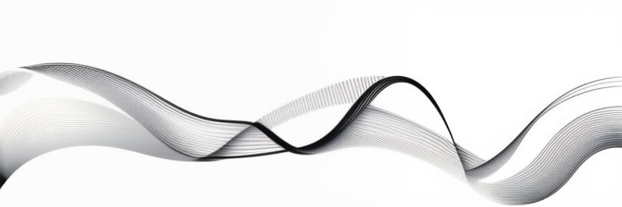

Ætheria Calendar
A Timeless Journey
Nikola Tesla said: “I was born exactly at midnight, I don’t have a birthday and I never celebrate it.”
Dive into the mystical world of Ætheria Calendar, a chronicle that transcends conventional timekeeping. This portal harmonizes celestial cycles, ancient calendars, and modern technology to offer an immersive experience of time.
Key Features:
- Ætheria Calendar System: Discover the unique Ætheria calendar, designed around Tesla Cycles, showcasing years, months, days, and more.
- Multi-Cycle Tracking: Navigate through various calendric periods, including Tesla Wave, Astral, DNA, TAO, and more, each offering insights into Cosmic and personal rhythms.
- Moon Phase Tracker: Stay attuned to Lunar phases, complete with illuminance and age calculations, enhancing your connection to celestial bodies.
- Historical Context: Calculate days since Nikola Tesla's birth, adding a historical dimension to your timekeeping journey.
- Palindromic Dates: Explore past and future dates with a palindromic twist, celebrating symmetry in time.
- Dynamic Time Display: Real-time updates ensure you're always in sync with the Cosmos, with Julian and Gregorian dates displayed alongside the current time.
- The Zero Day: a day of meditation and contemplation, offers a moment of stillness and renewal, connecting us to the deeper currents of the Universe.
Embark on a journey through time, where every moment is a testament to the interconnectedness of the Universe. Welcome to Ætheria Calendar—where time is not just measured, but experienced.
Ætheria Calendar
Tesla Cycles
- Year: №
- Day of Year:
- Month:
- Day of Month:
- Tesla Wave Period:
- Astral:
- DNA Period:
- TAO Period:
- Tesla Nexus Period:
- 96-Day Cycle Period:
- 24-Day Cycle Period:
- Days Since Tesla's Birthday:
Moon Phase
Timezone: TWZ
Moon Phase:
Moon Luminosity:
Moon Age:
-8 days ago:
-13 days ago:
-20 days ago:
-32 days ago:
-64 days ago:
-128 days ago:
-192 days ago:
-384 days ago:
Moon Luminosity:
Moon Age:
Palindromic Dates
Past & Future
Today (GC):8 Days
+8 days:-8 days ago:
13 Days
+13 days:-13 days ago:
20 Days
+20:-20 days ago:
32 Days
+32 days:-32 days ago:
64 Days
+64 days:-64 days ago:
128 Days
+128 days:-128 days ago:
192 Days
+192 days:-192 days ago:
384 Days
+384 days:-384 days ago:
